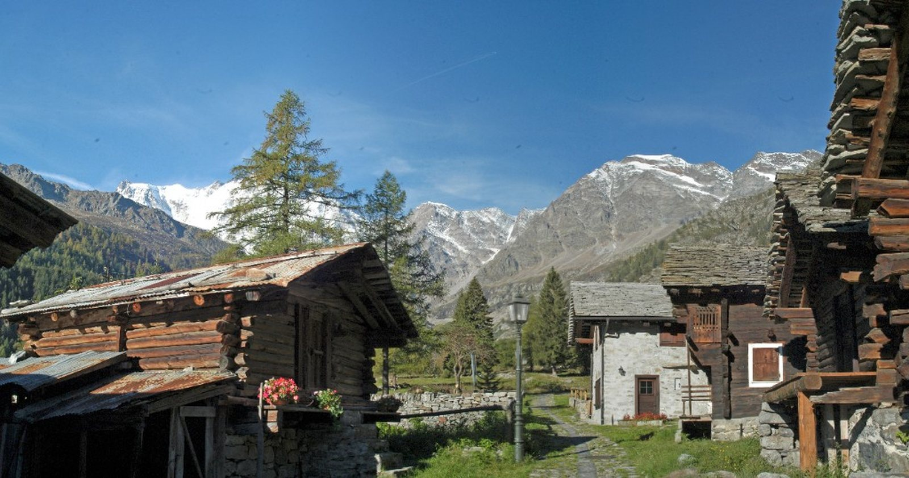

Activities throughout August
Experiences scheduled from today through 30 August at the foot of Monte Rosa: nature, culture and mountains for everyone on the booking portal.
Summer in the mountains
Mountain air, authentic experiences
When summer calls for nature and cool air, Macugnaga offers alpine climate, trails among larches and mountain experiences for families, adults and enthusiasts.
Through 30 August the booking portal gathers the experiences available online: forest wellness, cultural visits, gold mine, trekking and gentle activities.
- Authorised operators and qualified guides
- Online booking with instant confirmation
- Ideas for a day trip or a weekend with overnight stay

Close to cities and lakes
Real mountains, within easy reach
Macugnaga is about 1.5–2.5 hours from Milan, Varese, Novara and Lake Maggiore — and also from Orta, Mergozzo and Turin.
Perfect as a city escape or a mountain day if you stay in a hotel or campsite by the lakes: fresh air, alpine village and Monte Rosa views without long transfers.
Stay overnight
Sleep and wake up at the foot of the Rosa…
Through 30 August an overnight stay makes summer in the mountains more complete: sunrise and sunset on Monte Rosa, one or two experiences booked online, village walks and local food.
Choose a hotel, B&B or holiday home, then book the activities below. Practical guide on Weekend ideas.

Book online
Bookable experiences through 30 August
Updated list of activities with availability from today through 30 August 2026. Choose date and places, pay online and receive instant confirmation with guide contacts. For the full catalogue see all experiences.
Loading experiences…
FAQ
Frequently asked questions about activities throughout August
Which experiences can I book through 30 August in Macugnaga?
The list on this page shows all booking-portal experiences with availability from today through 30 August 2026: woods and nature, Walser House Museum, gold mine, trekking and gentle activities at the foot of Monte Rosa.
Is Macugnaga a good heat escape near Milan and the lakes?
Yes: cool alpine climate a short trip from Milan, Varese, Novara and Lakes Maggiore, Orta and Mergozzo. See also City escape.
How to plan a weekend with overnight stay?
Stay in Macugnaga, book one or two experiences online and enjoy village walks. Guide on Weekend and list of where to stay.
Information, prices and availability on the booking portal are provided by the operators. After booking you will receive the organisers’ contacts. Lem s.r.l. is not responsible for running the activities. More information